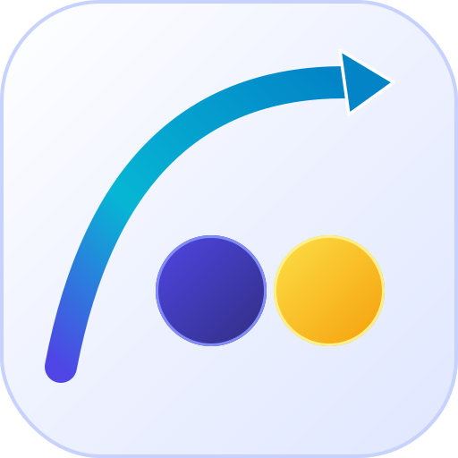
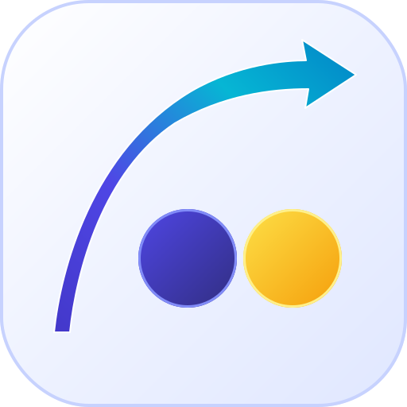
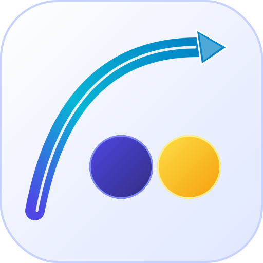

矢印案 1 • ソリッド・グラデーションリボン 【一押し推奨】
 44px
44px
Sleek Solid Ribbon
破線を完全撤廃し、インディゴ〜シアンの滑らかなソリッドリボンに純化。胴体と一体化したブルーのソリッド矢頭により、最高級のブランドシンボルへ昇華。

64px
32px
- 矢印: 破線なしのソリッドストローク（幅36px）＋一体型矢頭。
- 〇位置: cy=325（37px 下方シフト）で、アーチ下の大空余白が美しく拡大。
- 印象: ノイズゼロ。最も大人っぽく上質で、32px でもカスレ一切なし。
矢印案 2 • 流線型テーパースウッシュ
 44px
44px
Dynamic Tapered Swoosh
始点がキュッと引き締まり、右上に向かって徐々に力強く広がる「テーパー（先太り流線型）シェイプ」。ColvioシンボルのDNAを受け継いだスピード感と躍動感。

64px
32px
- 矢印: 太さが滑らかに変化するテーパー面（細い尾 ➔ 幅広の肩 ➔ 鋭いヘッド）。
- 〇位置: cy=325 で安定したグラウンドを形成。
- 印象: 先進テック企業や航空宇宙のような、未来的な推進力。
矢印案 3 • プレシジョン・ラインストリーム
 44px
44px
Precision Line Stream
太いグラデーション胴体の中央に、1本の極細ソリッド白コア（破線ではなく実線）を走らせた精密工学デザイン。鋭利なシェブロン矢頭が知的な印象を与えます。

64px
32px
- 矢印: 幅38pxボディ ＋ 5pxのソリッド白インライン ＋ レイヤー矢頭。
- 〇位置: cy=325 で広大なクリアランスを確保。
- 印象: CADや高精度データツールのような、緻密で正確な信頼感。